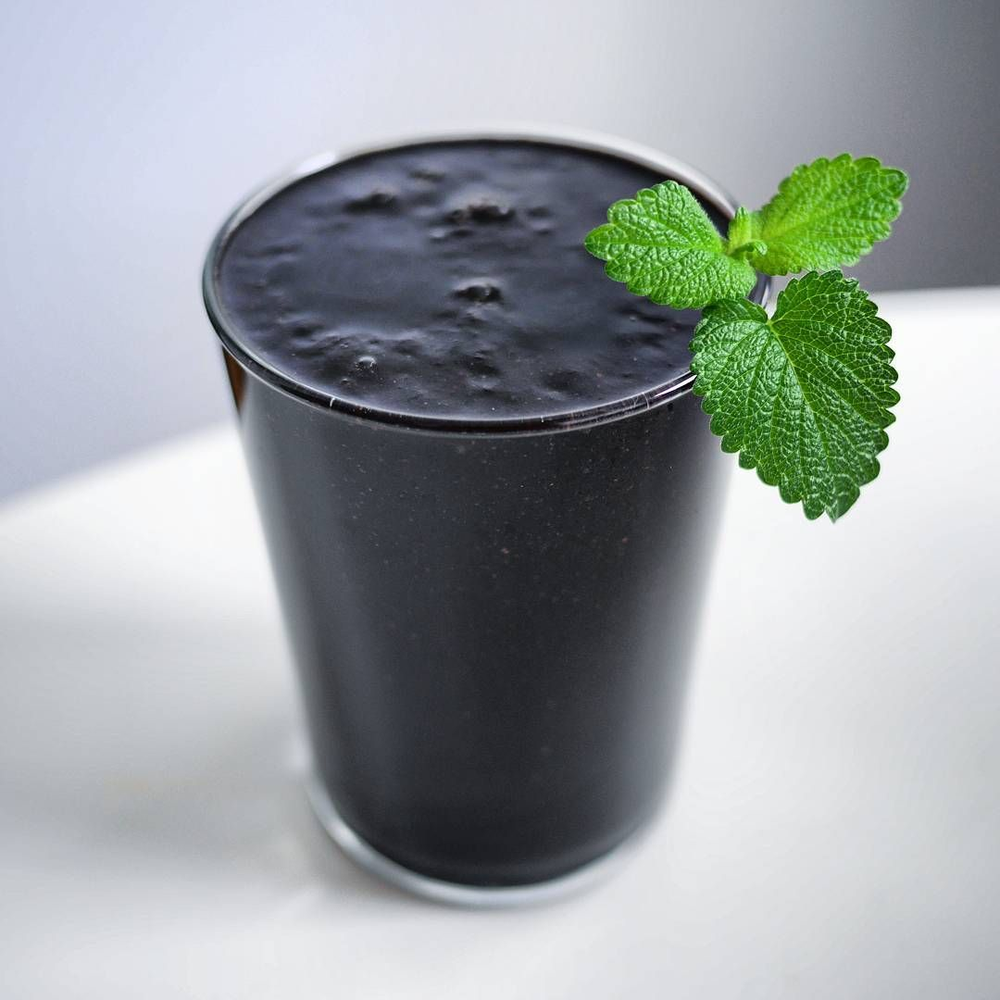

Black Smoothie

A black smoothie
Ingredients
- Tar
- Boot polish
- Treacle
- Bile
Steps
- Get out blender. Half-heartedly try to clean dried on remenants of last attempt to use
- Blend everything together. You will never avoid some bits being pulpy and unpleasant, don't try